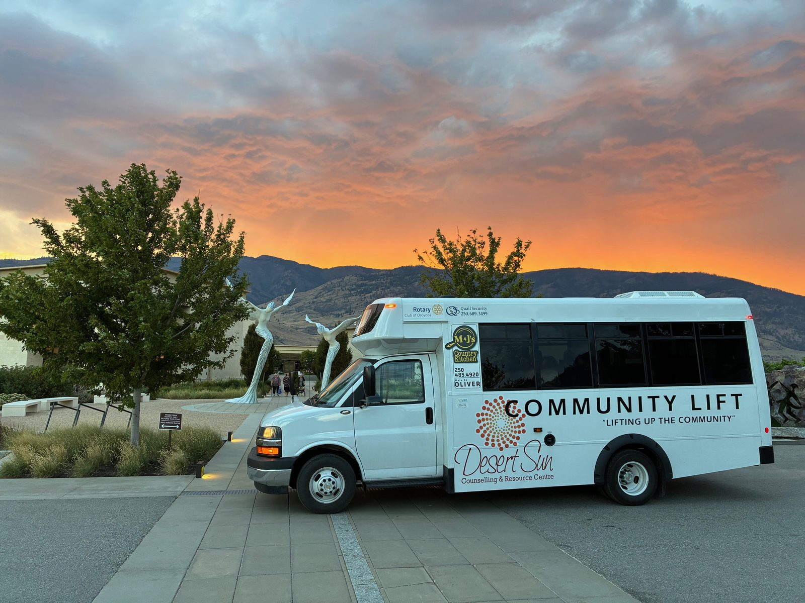
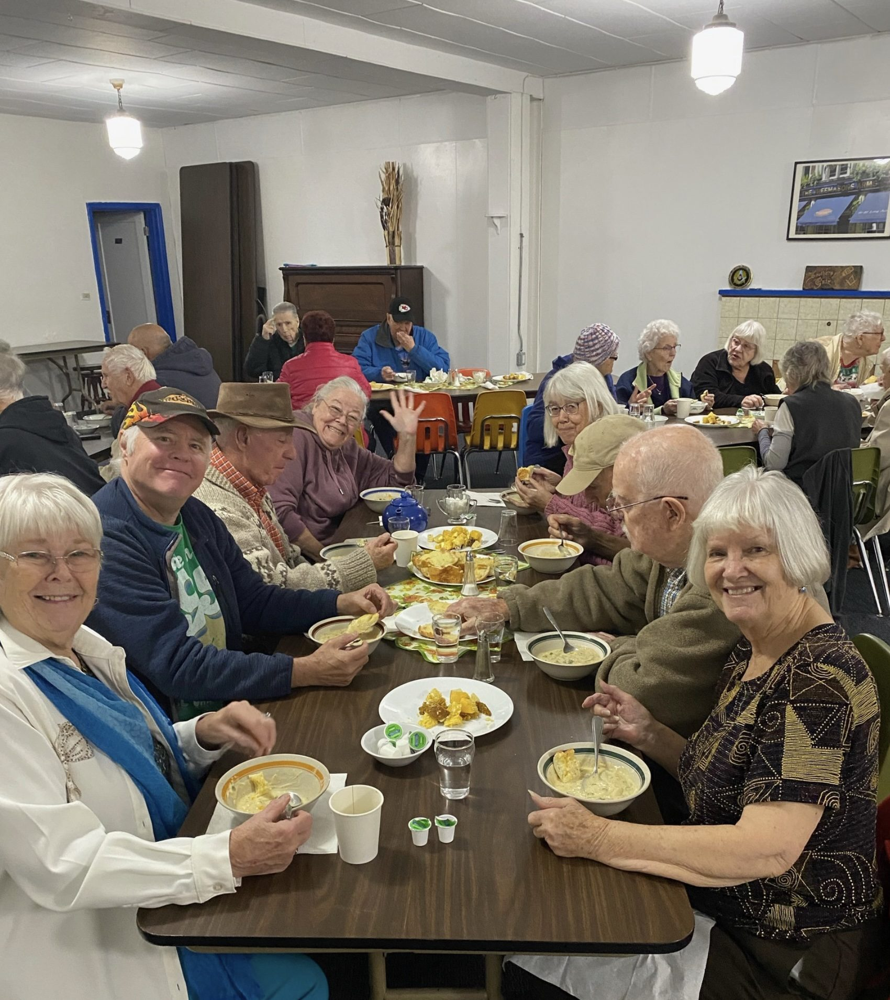

Seniors Programs
Desert Sun supports older adults in living with dignity, independence, and connection in the South Okanagan community. Most programs are free with no referral required. Some programs have a sliding scale or nominal fee.
Our seniors programs are designed to help older adults remain connected to their community, access services they need, and live safely and with dignity in the South Okanagan.
Most seniors programs at Desert Sun are free or available on a sliding scale. No referral is required. Simply call us and we will help you find the right support.
Better at Home
The Better at Home program helps seniors remain safely and comfortably in their own homes by providing practical, non-medical support with everyday tasks. Whether it’s yard work, light housekeeping, or a ride to an appointment, we’re here to help.
Services are offered on a sliding scale fee basis so that cost is never a barrier. Better at Home is funded by the Province of BC and United Way, and is available to seniors across the South Okanagan.

Services Available
Lawn mowing, weeding, garden clean-up, and seasonal yard maintenance to keep your home safe and tidy.
Vacuuming, mopping, dusting, laundry assistance, and general tidying to keep your home comfortable and safe.
Rides to medical appointments, errands, and community events so you can stay active and connected.
TAPS — Therapeutic Activation Programs for Seniors
TAPS was developed to prevent isolation, loneliness and depression in our seniors. TAPS provides an opportunity for seniors to gather and connect, participate in crafts, games, chair yoga and have a healthy, homemade meal together.
The program runs 4 days a week and transportation is provided to the TAPS location. TAPS puts back joy in the lives of our seniors.
Activities Include
Walking groups, chair yoga, and movement activities to support physical health and mobility.
Arts and crafts, needlework, cribbage, bingo, coffee chats, movies, cooking, and “My Life So Far” storytelling.
Subsidized lunches and coffee provided daily. Tablet lending and computer lessons on Wednesdays and Thursdays in Oliver.
Technology Programs
Staying connected in today’s digital world matters. Desert Sun offers free technology programs to help seniors and community members build confidence with devices, stay in touch with family, and access services online.
Tablet Lending Library
Free LoanDesert Sun’s Tablet Lending Library provides free short-term tablet loans to seniors, newcomers, and low-income individuals. Borrowers also receive basic iPad training to help them get started and stay connected with confidence.
Computer Tutor
Free SessionsOne-on-one computer tutoring sessions are available free of charge at local libraries in Oliver, Osoyoos, and OK Falls. Sessions are tailored to your skill level — whether you’re just starting out or looking to learn something new.
Community Lift Program
Community Lift is a vital transportation service designed to connect more seniors and vulnerable adults to medical services to ensure better health outcomes for our clients. This service provides door-to-door pickup and drop-off and is an affordable, accessible bus transportation program that runs Monday through Thursday for seniors and people with mobility challenges in the South Okanagan.
The program is also available for seniors to grocery shop and run errands if space permits. Fares range from $5–$20 return, keeping transportation affordable for everyone. The bus is equipped to accommodate passengers with mobility aids.

Community Connector
The Community Connector program bridges the gap between health care and social care by connecting seniors to community resources and social supports. Our Community Connector can meet with seniors in their homes or in the community.
Whether you need help understanding what services are available, finding transportation, connecting with community programs, or just some friendly conversation, our team is here for you.
The Community Connector Can Help With
Connecting seniors to community events, groups, and activities to reduce loneliness and build meaningful connection.
Helping seniors understand and access government services, health care, housing, and community supports.
Connecting older adults to the specific programs and services that best match their needs.
Elder Abuse Prevention
Elder abuse takes many forms — physical, emotional, financial, and neglect. Desert Sun provides education, awareness, and direct support focused on preventing elder abuse and supporting those who have been affected.
We offer community presentations for seniors, families, and service providers, and can provide individual support and referrals to those who have experienced or are at risk of abuse. All support is confidential.
Affordable Housing
Desert Sun manages 18 affordable housing units in Oliver in partnership with BC Housing, providing safe, stable, and affordable homes for seniors and individuals who need them most. These units offer an essential foundation for those who need long-term affordable accommodation.
Priority is given to individuals with low incomes. If you or someone you know needs affordable housing in the South Okanagan, contact our Oliver office to learn about availability and eligibility.

Men’s Shed
Men’s Shed is a welcoming social workshop space where men gather to work on projects, share skills, and enjoy good company. This program provides a communal, collaborative gathering space for men to socialize and provide peer support. Located in Oliver, the shed is equipped with woodworking tools and a 3D printer, with sessions running every Tuesday morning.
Research shows social connection is one of the most important factors in healthy aging. Men’s Shed offers a relaxed, no-pressure environment where participants can build things, learn new skills, and form lasting friendships.
Other Programs We Offer
Explore our full range of free programs including crisis services, counselling, parenting support, and community resources for all ages.
View All ProgramsHelp us support our seniors
Desert Sun’s seniors programs are free because of the generosity of our funders and donors. Your support helps keep these vital programs available.
Social Meals Program
Social Meals is more than sharing a meal — it is about connection, dignity, and community. Our Social Meals Program provides seniors with access to warm, nutritious, home-style meals in a friendly, welcoming space where everyone feels valued and included.
Offered weekly in Oliver and Osoyoos, this program helps reduce food insecurity, ease social isolation, and support the overall health and well-being of older adults in our community.